Na przykładzie: Microsoft Excel / LibreOffice Calc / Google Sheets
W tym poradniku nauczysz się, jak stworzyć prosty arkusz budżetu domowego. Po wykonaniu wszystkich kroków będziesz potrafić:
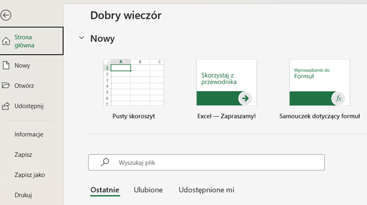
Wybierz opcję Nowy pusty skoroszyt lub Pusty arkusz.
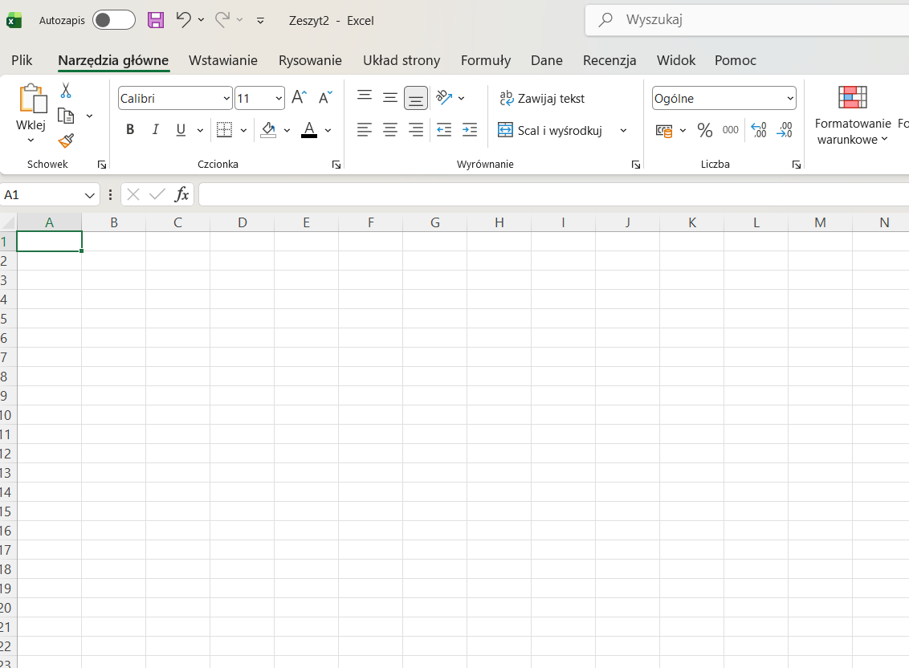
Wprowadź w komórkach:
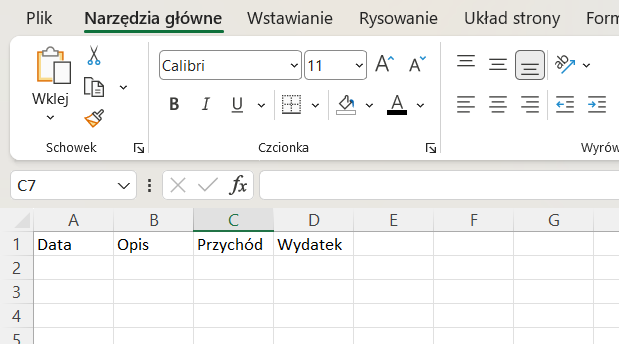
Zaznacz komórki A1:D1, a następnie:
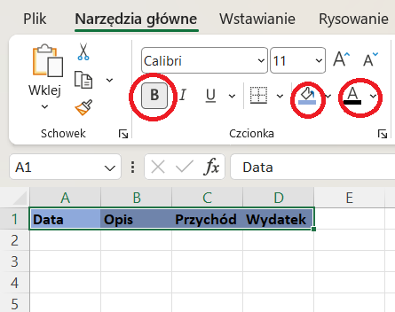
Przykład:
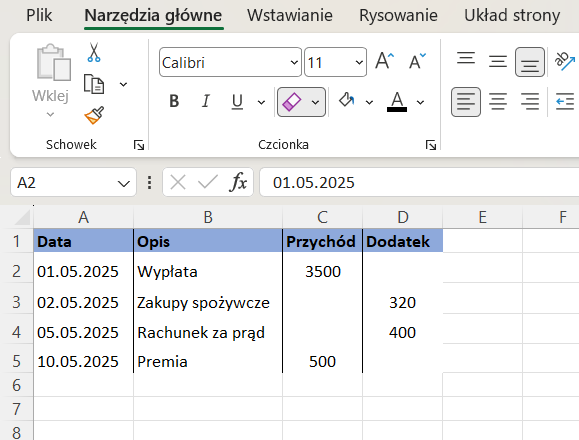
=SUMA(C2:C5)
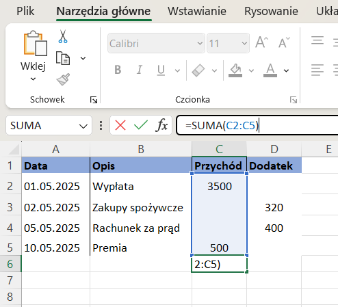
=SUMA(D2:D5)
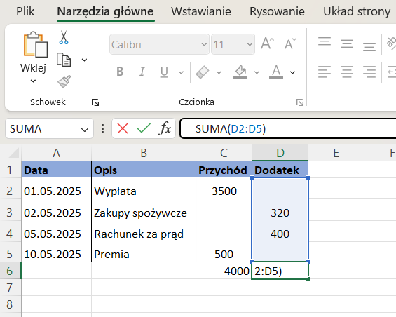
=C6-D6
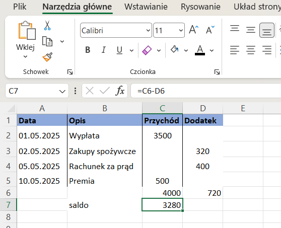
Zaznacz C2:D7.
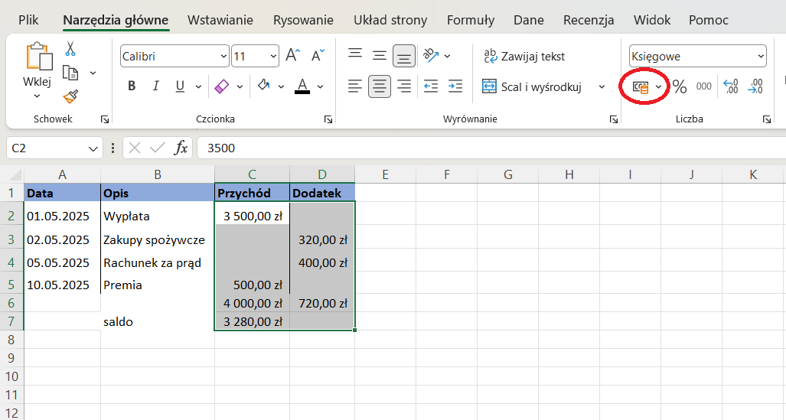
Wybierz format Waluta lub Księgowy.
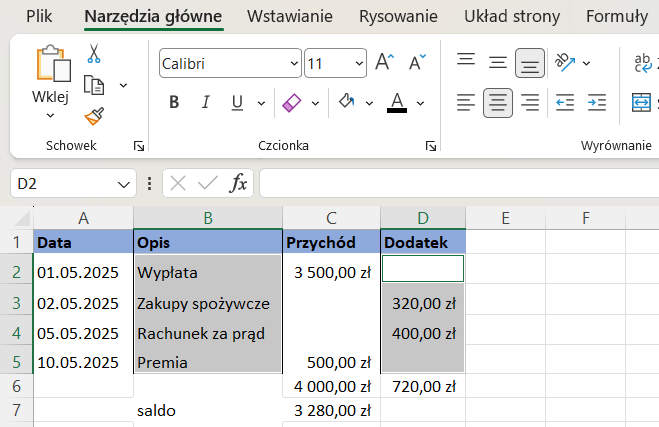
Zaznacz B2:B5 oraz trzymając Ctrl — D2:D5.
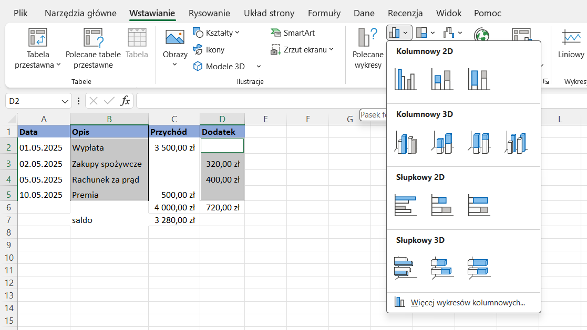
Wybierz: Wstawianie → Wykres kolumnowy.
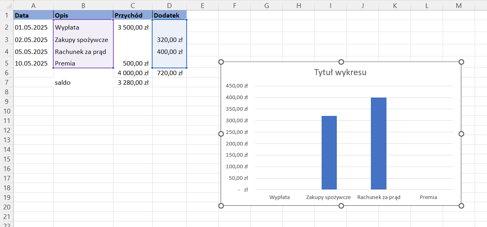